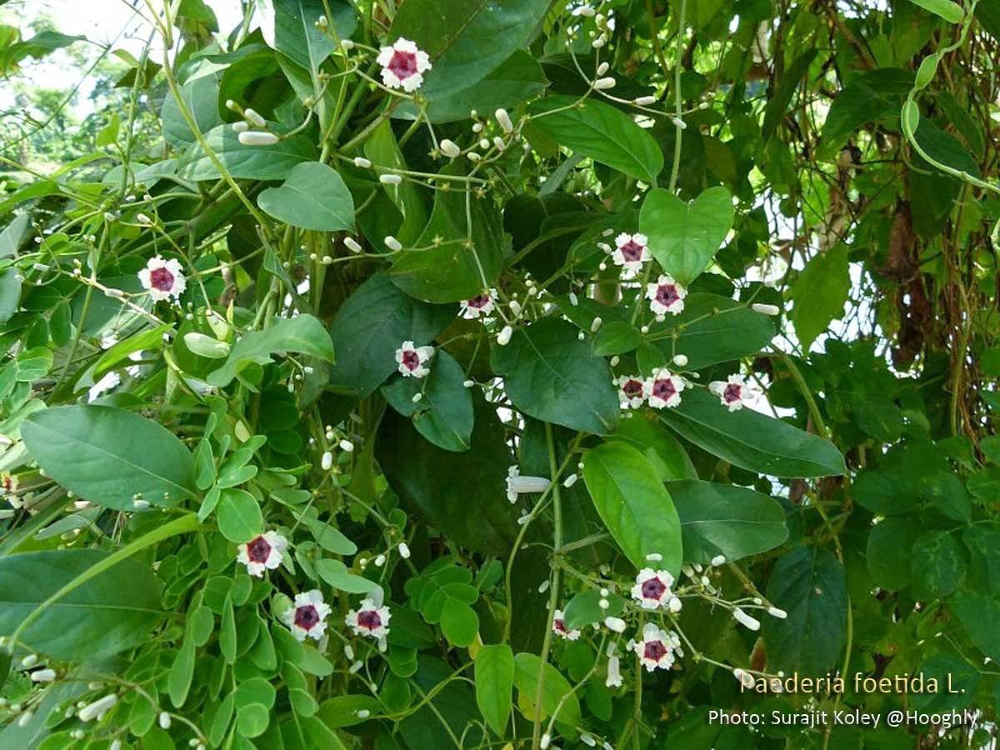

Overview
Botanical Name: Paederia foetida Auct. Non Linn. [P.scandens(Lour) Merr; Paederia tomentosa B1; Gentiana scandens Lour]
Family: Rubiaceae (Manjishta kula)
Sanskrit Name: Gandha Prasarini (Gandha means smell, prasarini means spreading)
Introduction and Habitat
Skunk Vine is appreciated for its qualities like Guru guna (heaviness) and Ushna veerya (hot potency). It is effective in pacifying vatic complaints, fracture healing, aphrodisiac, and gouty arthritis. Notable formulations derived from this herb include Prasarinyadi taila and Prasarinyadi kashaya.
Habitat: Found as a weed in Gujarat, Karnataka, Assam, Tamilnadu, Kerala, and West Bengal. The name 'foetida' or 'Gandhaprasarini' indicates the bad odor emitted by this vine.
The roots are the primary usable parts, though the whole plant is used for medicinal purposes.
Therapeutic Uses
- Vrushya: Aphrodisiac
- Balakrut: Improves strength and immunity
- Sandhanakrut: Useful in wound and bone healing
- Vata Disorders: Relieves pain, inflammation, and stiffness
- Gout and Kapha Imbalance: Treats gout and Kapha disorders
- Rheumatoid Arthritis: Used in treatment
- Bloating and Abdominal Pain: Relieves bloating and abdominal pain
Home Remedies
- Abdominal Pain: Leaf juice (2-3 ml) mixed with lemon juice, administered on an empty stomach.
- Neuralgia and Muscular Pain: Traditional oil made from a paste of the whole plant, drug decoction, and sesame oil.
- Arthritis: Fine paste of the whole plant applied over joints.
- Joint Pain and Body Ache: Decoction of Gandhaprasarini, ginger, and cumin seeds (20-30 ml).
Classical Categorization
Bh. Pr Ni – Guduchyadi Varga
Distribution – Central and Eastern Himalayan Ranges; Western Bengal to Assam
Major Chemical Constituents
- Asperuloside
- Padedersoidic Acid
- Paederoside
- Scandoside – Iridous Glycosides
- Valine, Tyrosine, Histidine
- Carotene, Vitamin C, Cursolic Acid
- Epifridelinol
Medicinal Qualities
- Rasa (Taste): Tikta
- Guna (Qualities): Guru, Sara
- Virya (Potency): Ushna
- Vipaka (Taste Conversion after Digestion): Katu
- Effect on Tridosha: Decreases Kapha and Vata
- Pharmacological Action: Antidysenteric, Antimicrobial, Antitussive, Antioxidant
Dosage and Parts Used
- Dosage: Fresh Juice – 10-20 ml, Decoction – 50-100 ml
- Part Used: Root, Leaf
Interaction with Medicines and Supplements
- Homeopathic Medicine: No known adverse reaction.
- Supplements: Generally compatible; consult a doctor if taking multiple products.
- Western Medicines: Seek doctor’s advice; take Allopathic medicine first, wait 30 minutes, then take Ayurvedic medicine.
Vernacular Names
- English Name: Stink Vine, Chinese Fever Vine
- Hindi Name: Gandhaprasarani or Pasaran
- Telugu Name: Takkeda, Savirel
- Bengali Name: Gandhabhaduliya, Gandhabhadule, Gandal
- Marathi Name: Hiran-vel
- Gujarati Name: Gandhana
- Tamil Name: Pinarisangai
- Assamese Name: Bhedai Lota or Paduri Lota
Morphology
- Creeper
- Leaves: Opposite, ovate or lanceolate
- Inflorescence: Panicle
- Flowers: Violet, funnel-shaped corolla
- Fruits: Orbicular
Systemic Action
- External: Relieves pain, edema, and stiffness; indicated in arthritis, joint inflammation, and Vata disorders.
- Nervous System: Vatahara action, pacifies Vata dosha, especially for joint stiffness.
- Digestive System: Pacifies Vata dosha; indicated in abdominal cramp, constipation, and abdominal distention.
- Circulatory System: Purifies blood; indicated in diseases due to Vata and Rakta origin.
- Satmikarana: Promotes body strength, aids in fracture healing, and relieves post-viral joint pain and stiffness.
- Excretory System: Increases urine output; indicated in painful micturition and calculi.